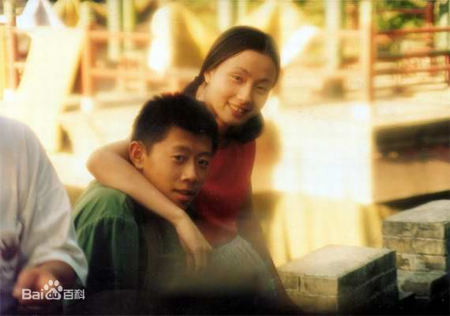
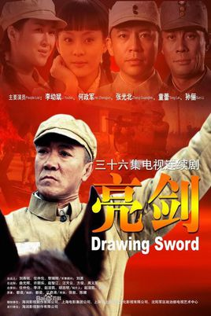
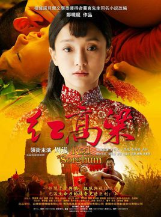
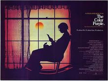

作品延展
这一节主要是一些优秀作品改编的影视作品，部分我已经看过，有很多的口碑都不错的哦。

《阳光灿烂的日子》是1995上映的一部电影，本片是姜文导演的处女作，由王朔的小说《动物凶猛》改编。该片的背景是文革时的北京，一群生活在部队大院里的孩子，在耀眼的阳光与遍地的红旗中间，渡过自己的青春。意识流的故事里，有爱情和性的冲动，有幼稚和失败的革命精神，也有成长的故事。

《亮剑》》是海润影视制作有限公司出品、发行的一部战争类电视连续剧。改编自都梁创作的长篇小说《亮剑》。该剧描述了革命军人李云龙经历了抗日战争、解放战争、抗美援朝等历史时期，军人本色始终不改的故事。

《红高粱》改编自莫言的《红高粱家族》，该剧讲述了在20世纪30年代初，九儿在充满生命力的山东高密大地上，用生命谱写的一段关于爱与恨、征服与被征服，充满生命力的近代传奇史诗巨制。

《The Color Purple》是史蒂文·斯皮尔伯格执导的剧情片，改编自美国作家Alice Walker的《紫色》。电影于1985年12月16日上映。该片讲述了佐治亚洲的黑人姐妹西丽和南蒂从小就被分开，多年后终于团聚的故事。